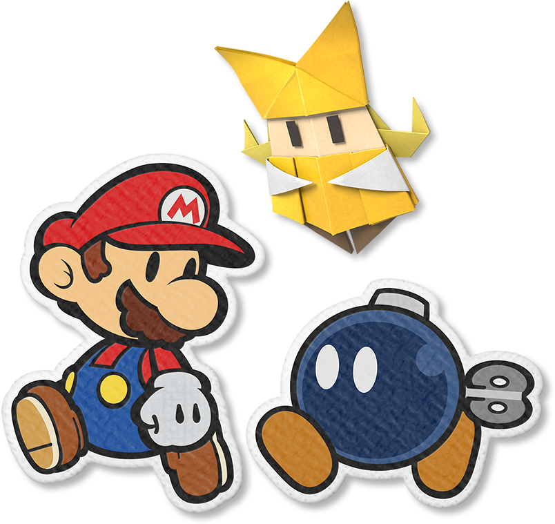
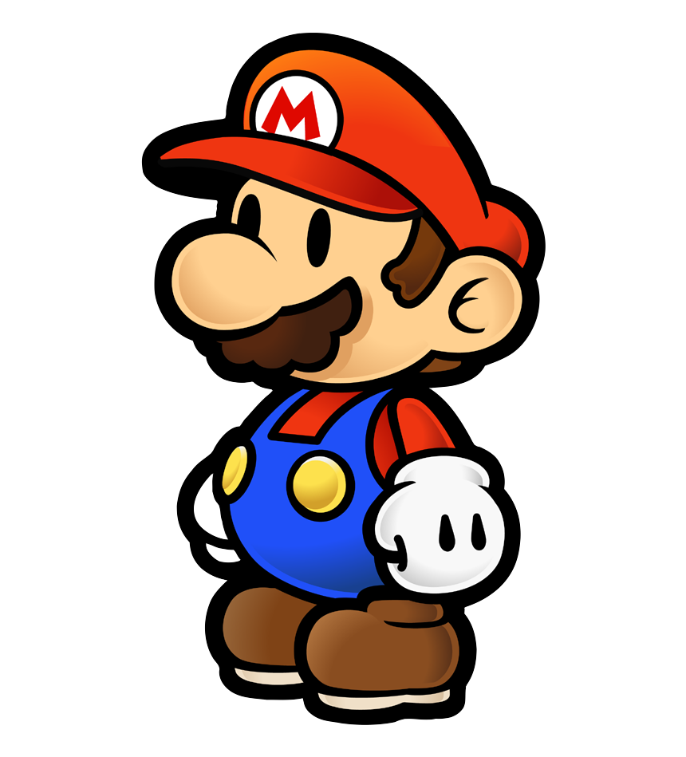
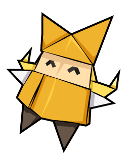
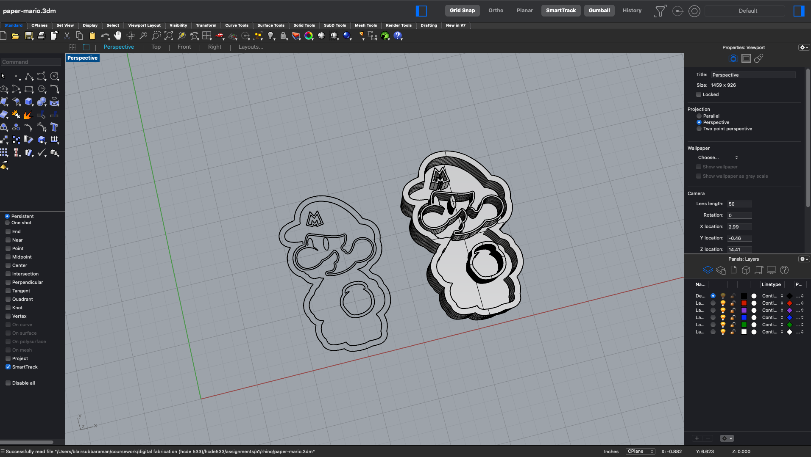
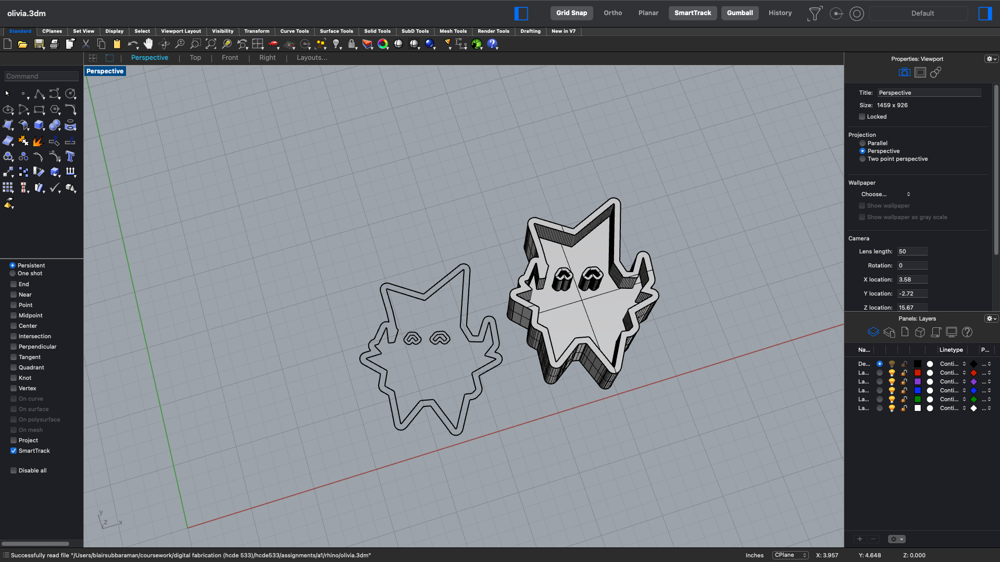
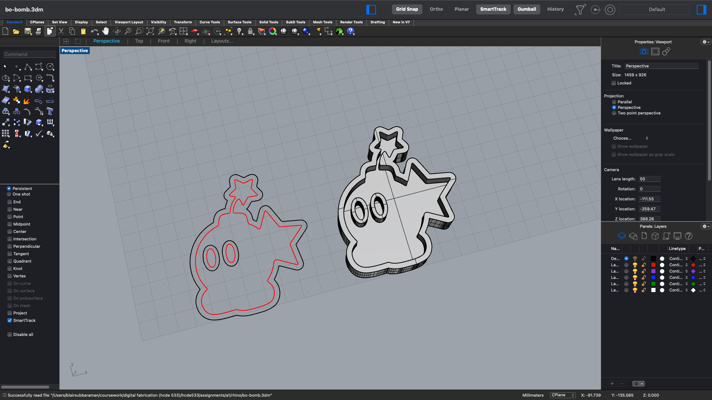

cookie cutters!
Over spring break I was playing Paper Mario, so I made cookie cutters of the main trio from the game: Mario, Bo-bomb, and Olivia!
process!
- Source photos
- I was pretty unsure what level of detail would be reasonable to maintain through the editing & vectorizing process, but figured these characters were recognizable enough from their silhouette anyways in the scenario that I had to scrap all interior features.
- Photo treatment
- GIMP: desaturate, increase contrast, threshold. I also used the fill/paintbrush tools to fill in some features that weren't needed like the buttons on Mario's overalls, or erase e.g. Olivia's creases.
- Inkscape: trace bitmap
- 3D Model
- General clean up: e.g. I ended up tracing a simpler version of the 'M' on Mario's hat using a polyline so that it would be a simpler to cut out & remove with a cookie cutter.
- Offset: I offset the outer curves by 0.1" (2.54 mm), but for finer interior features like Mario's face that was too large, so I went down to 0.05". Since the nozzle on our Ender 3 is 0.4mm, this seemed like a plausible size, but I'm not sure if this is too thin in practice.
- Extrude: I made the cookie cutters 1 inch tall with a half inch base to support interior features; but for Bo-bomb, I realized I opened Rhino in mm units, so everything is scaled ~25x to convert mm to inches. Mario's eyes are just posts that I will squash, since they were too small to offset & extrude.
results!
| ~ | mario! | olivia! | bo-bomb! |
|---|---|---|---|
| original image [mario, olivia, bo-bomb] |
 |  | |
| svg [mario, olivia, bo-bomb] |
 |
 |
|
| 3dm [mario, olivia, bo-bomb] |
 |  |  |
| stl* [mario, olivia, bo-bomb] |
{kind=link}
{kind=link}
{kind=link}
{kind=link}
notes!
I found Rhino really fun to play around in! A dump of miscellaneous notes & questions for my own long-term memory:- i get an error when saving as a .dxf from inkscape that i need to follow up on still. used svg for now.
- sometimes my svg is grouped when imported, have to ungroup to access control points
- shift + right-click'n'drag to pan in perspective viewer
- sometimes when offsetting, the resulting curve isn't closed; i just select & rebuild to fix. is this okay/is it bad practice to rebuild things willy-nilly?